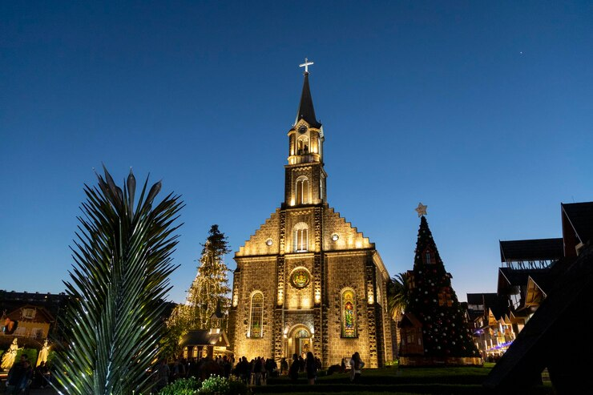
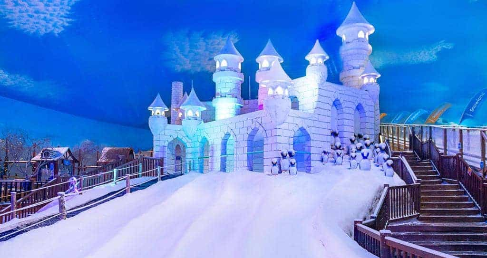
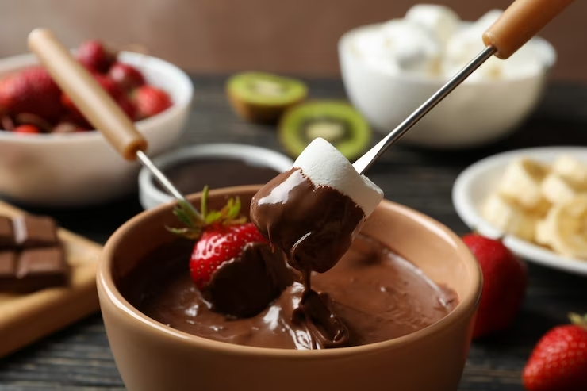

-
Igreja Matriz São Pedro

Construída em um período de oito anos, a capela que se tornaria a Igreja Matriz São Pedro foi erguida originalmente em madeira, no ano de 1917.
-
Snowland

No reino de Snowland, em Gramado, tem neve de verdade o ano inteiro. Em qualquer estação o clima é de diversão, com atrações incríveis para todos!
-
Fondue de Gramado

Nossa história começou em 1982 e neste mesmo local o restaurante foi idealizado pelo atual proprietário Luiz Tomasini, com a tragétoria de 40 anos.